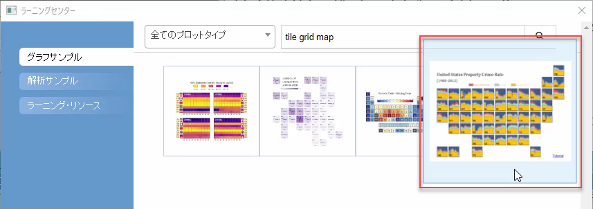
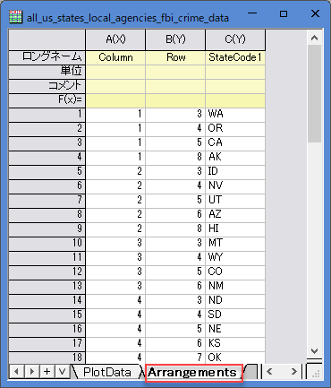

ベースグラフからタイルグリッドマップを作成
Tile-Grid-Map
概要
このチュートリアルでは、ベースグラフからタイルグリッドマップを作成する方法を説明します。

これは米国の各州の資産犯罪率を表しているタイルグリッドマップです。各タイルはベースグラフから作成され、各州を表します。
学習する項目
このチュートリアルでは、以下の項目について解説します。
- ベースグラフを準備する
- ベースグラフからタイルグリッドマップを作成する
- タイルの配置データの取得方法
ステップ
このチュートリアルは、サンプルプロジェクト「Maps - Tile Grid Map for US Crime Rate」に関連しています。ラーニングセンター(ヘルプ:ラーニングセンターを選択するか、F11キーを押してください)で「Tile Grid Map」というキーワードを検索して見つけることができます。
- ラーニングセンターでサンプルプロジェクトを検索して開きます。
- 
- ワークブックをアクティブにします。「PlotData」シートでは、タイルをプロットするためにすべての州のプロットデータが配置されています。2つの列ラベル行（ColumnとRow）にはタイルを配置するための列行グリッドデータが格納され、列行「postal」には州の識別子が格納されます。

ベースグラフを準備する
- B列～D列を選択して作図：棒、円、面積：積み上げ面を選択し、積み上げ面グラフを作成します。
- 凡例を削除し、X軸とY軸の目盛りと目盛りラベルを非表示にし増す。レイヤ枠を表示させ、レイヤ背景を事前に定義したカラーリストで塗りつぶします。

- 以上でベースグラフの準備ができました。
ベースグラフからタイルグリッドマップを作成する
- データのワークブックをアクティブにします。「PlotData」シートのすべての列を選択して、作図：マップ：グリッドマップを選択し、 Plottilemap ダイアログを開きます。
- このダイアログの設定項目
- プロットタイプでベースグラフを選択します。次に、ベースグラフボックスのグラフを選択より先ほど作成したベースグラフを選択してください。
- 識別子を表示にチェックを付け、識別子としてpostalを選択します。
- レイヤの並べ方のドロップダウンより、列と行それぞれにColumnとRowを選択します。
- OKボタンをクリックすると、グリッドマップが作成されます。タイルグリッドマップでは、1つのタイルをカスタマイズすると、すべてのタイルが一緒に更新されます。1つのラベルを移動してフォントサイズを変更します。

配置データの入手方法
サンプルプロジェクトでは、グリッドデータが列ラベル行に適切に配置されています。plottilemapダイアログでこれらを簡単に選択することができます。このような列ラベル行がない場合は、これらの値を手動でセルに1つずつ入力する以外に、以下のメソッドを使用して取得できます。
- まず、列行グリッドによってタイルがどのように配置されているかを説明するために、テーブルを準備します。

- 手動でテーブルを作成して、列行グリッドをタイルの位置の指標として使用します。
- 現在のサンプルグラフについては、配置表をダウンロードして入手できるオンラインテンプレートをすでに提供しています。
- 作図：テンプレートセンターを選択し、テンプレートセンターを開きます。このダイアログ内の、テンプレートの種類でブックを選択し、「タイル」とキーワードを入力して、「タイルグリッドマップのグリッド配置」を見つけます。Download and Installボタンをクリックしてテンプレートを取得します。

- テンプレートセンターを閉じて、メニューから、ファイル：新規作成：ワークブック：参照で、新しいブックダイアログを開きます。「タイルグリッドマップのグリッド配置」テンプレートを選択し、開くボタンをクリックして開きます。
- 新しいブックダイアログを閉じます。「United States_Arrangement」シートに移動すると、米国の各州のグリッド配置データが表示されます。

- 必要に応じてタイルの配置を変更するために、州コードの位置をリセットすることも可能です。
- すべての州のグリッド座標を取得します。B列～L列を選択して、メニューからデータ整形：列スタッキングとクリックし、列スタッキングダイアログを開きます。
- グループ行として、列を選択し、別の列を含めるにチェックします。右の三角ボタンよりA列を選択しておきます。欠損行の排除にチェックを付け、データ列のロングネームには「StateCode」と入力します。
- OKボタンをクリックします。既存のワークシート「United States_Grid_Index」と同じ新しいシートが作成されます。
タイルグリッドマップを作成するときの配置列データの使用方法
上記の3列を取得したら、それらを使用して指定した位置にタイルをプロットできます。
- このシートをソースワークブック「all_us_states_local_agencies_fbi_crime_data」にコピーします。
- 
- Note:サンプルプロジェクトは配置列データを使用して、シート「Arrangement」をすでに作成しています。
- ベースグラフがあらかじめ用意されている状態で、「PlotData」シートのすべての列を選択して、作図：マップ: タイルグリッドマップを選択し、 Plottilemap ダイアログを開きます。プロットタイプとしてベースグラフを選択し、準備したベースグラフを選択します。識別子を表示にチェックを付けて、識別子にPostalを選択します。
- ラベル行に情報を設定ボタンをクリックし、識別子、列、行を設定それぞれ選択し、「PlotData」のワークシートへ反映させます。

- 図のように、配置データは変換され、プロットデータとともにワークシートに挿入されています。plottilemapダイアログのレイヤの並べ方は自動的に選択されます。